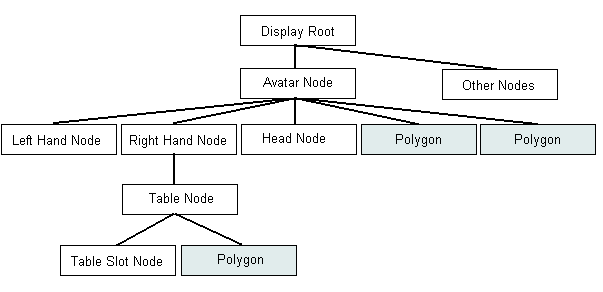

Author(s): Tony, based on documentation from Harry.
Proposed 3D API. This is the proposed replacement for AgLib.
The DE subsystem is responsible for displaying graphical and audio representations of in-world una. It enforces no particular representational scheme - instead it uses a family of objects, Dynamos, which are written to manage different display formats, and which can be used concurrently. At present there are only two dynamos in use: Dynamo2D and Dynamo3D, which handle sprites and polygonal models respectively. More dynamos could be written later if needed (for instance to deal with animated GIFs or sprite-handling specifically for card games etc...)
The DynamicsEngine object is mostly concerned with timing information - the Dynamos are responsible for managing their own animation, but they take a common time base from the DE object, which manages a list of objects that need to be run periodically. The DE has its own thread, the DETickerThread, which activates the dynamos about 15 times a second, though this drops if the CPU is loaded (or if the DE is asked to run at a different rate). Dynamos are intended to be able to deal with irregular ticking correcly.
The DE object also provides queuing for messages that could otherwise cause deadlock (notably forwarding EResults to an EObject inside the Vat).
The DE subsystem provides a texture caching service, available both to dynamos and to other GUI subsytems. The texture cache has a 'soft' cache limit - the size of the cache grows from the originally specified size if new textures are requested but none are freed.
The DE subsystem deals with text balloon display. The balloons are handled elsewhere in ucosm whilst they are still being typed, but when the user has finished composing the balloon (or if the message comes from a remote machine), the DE handles the rest.
The DE subsystem was written to run with AnyChannel renderer; the texture manager, the current dynamos and the swatch code are quite heavily tied to it (though they communicate with the rest of ucosm through interfaces which are AC independent). Other sections, such as the balloon system, the display heirachy system and the controller (of which more later) are only loosely tied to it.
The APIs that the DE implements are all based on a heirachical 3D coordinate system so that the interfaces should be fully general. The DE manages the heirachical movement, rotation and containership operations, leaving dynamos free to work in their own local coordinate systems.
Although the integer id's need not be any specific integer, it is best to use the DQ_FOO constants defined in DynamicQueue (which can be added to for new messages). This allows for very readable tracing - the DynamicsQueue Trace (trace-name 'dynamicsqueue'), gives the best overall impression of what the dynamics subsystem is doing, which is why it is mentioned in this overview document.
Use of the DynamicsQueue is the principle method of avoiding deadlocks; the queue is processed once per tick of the DETickerThread. It is the first thing that happens in a tick cycle.
There are several controller classes:
DEControllerSlottedLeafNode is the most commonly instantiated controller object. Originally it was intended that each unum would use the controller with the most limited abilities sufficient to represent that object. It was easier, however, to use the composition-cabable controllers for all standard objects. These three controller classes could be merged into one with no adverse affects.
Since these controller objects only pass calls down to dynamos via a queue, they all keep locals copies of various aspects of dynamo state, so that they can synchonously satisfy any requests from the una without needing to call into the dynamos.
In effect, each dynamo keeps track only of where it should be in its own local space, with child DisplayTree objects being moved automatically. After all the dynamos have been updated, any leaves which have moved in that tick can be redrawn.
As well as keeping track of the positions of polygons, the tree keeps track of the position of compositional slots. In the diagram below, an avatar is standing in a region. The avatar has three compositional slots: left hand, right hand and head. It also has a couple of polygons, which are the on-screen representation of the avatar. In the avatar's right hand is a table, which can also contain objects, but which is currently empty. The table is represented on screen by a single polygon.

The position of the avatar, in the root's coordinate system, is stored in the avatar node. This corresponds, typically, to the point midway between the avatar's feet. Offset from this point are the hands and head. The offsets of these are stored in the 3 child nodes, and are in the coordinate system of the avatar. The 'right hand' node contains the table. The offset of the table from the hand is in the hand's coordinate system. In this case it is the same coordinate system as the rest of the avatar, since all are managed by the same dynamo. This is not enforced, but is always the case.
If the avatar walks, the avatar node and everything under it moves. If the avatar raises its right hand, the right hand node, and everything under it, will move.
The table node probably refers to the base of the table (since that would seem a logical place for a table to be considered to be). The 'table slot' node would refer to a position on top of the table, in the coordinate space of the table. This in turn could hold another object etc...
Since the whole tree pushes information downwards, there is no unecessary polling for information.
Another aspect of the nodes which the tree manages is heirachical rotation for front-facing polygons (sprites). Since the camera viewing the scene may be moved, the re-orientation of polygons that need to face the camera must be adjusted automatically. If a 2D avatar is holding a 2D prop, then both polygons must be adjusted to face the camera by twisting them about a centre of rotation at the base of the avatar, so that an object in the avatar's hand will continue to look as though it is in the hand.
However, there is a subtlety caused by the face that 3D polygons do NOT need to be adjusted. If a 3D avatar holds a prop, only the prop needs to rotate. The DisplayTree keeps track of which sub-trees must rotate, and about which point it should be done.
Dynamos are 'ticked' by the DynamicsEngine, ususally at about 15 frames per second. They work out if they need to change any state in the renderer because of animations. Since the frame rate can be irregular (according to CPU loading), each dynamo is expected to make adjustments for it (by dropping frames of animation, interpolating between keyframes, or whatever is appropriate for that style of dynamo).
Dynamos can also return a bounding box of there representation so that it can be used by path-planning, should that get plugged into the region unum.
Each appearance class inherits from Appearance, a super class which has a few methods common to all appearnces, such as getDataHolders(), which returns all the DataHolders (references to resources in the Repository) so that TOS checks can be made.
Each appearance class can take in a text file, parse it and turn it into an appearance object (if the text file is valid). This ability is used by the curator to build repositories.